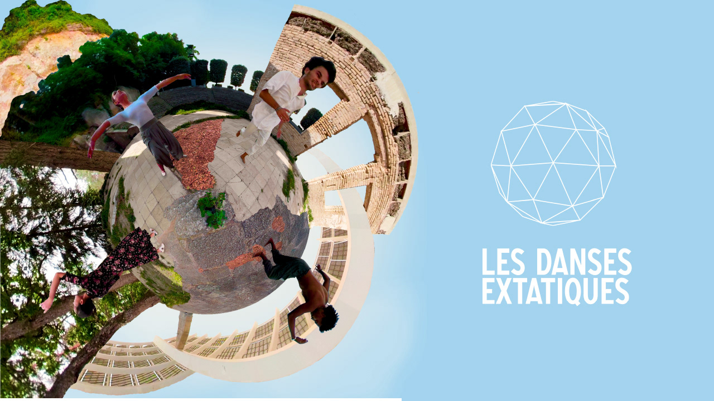
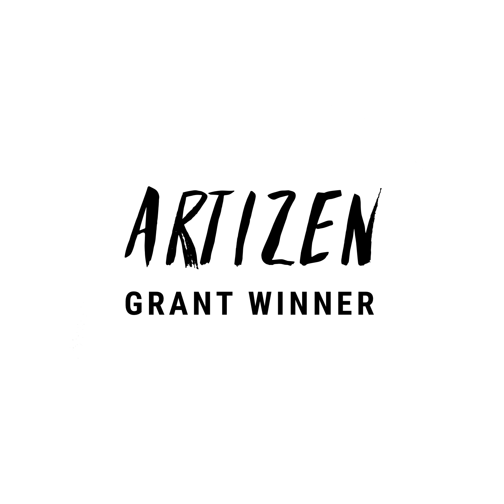
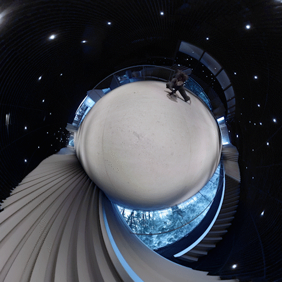

Les Danses Extatiques
Two artists work for the first time with immersive technology, creating a series of 360° VR dance films with 3D audio.
The results are beautiful pieces that represent them culturally and artistically, challenging their traditional dominance of their art and expanding their interaction with the spectator.


The project started in Paris, France with a series of experiments with local performers. As the format evolved, we started giving a broader vision. With artists’ support and collaboration, we were able to start in cities closer to Paris, like Antony and Fontainebleau.
Thanks to participants’ connections and the CANVAR association support, we were able to collaborate in Barcelona, Spain. Finally, thanks to the support of the XR international community we obtained the Kaleidoscope’s Creative Challenge 2020 Grant and the Artizen Transformation Grant 2021. This international recognition was pivotal to our proposal.
Collaborations
